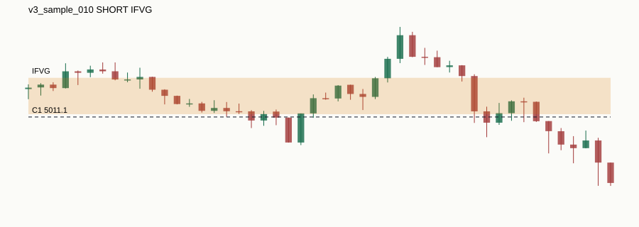

Research-only candidate windows. Not signals, not validation, not live trading.

| sample_id | v3_sample_010 |
|---|---|
| symbol | XAUUSD |
| anchor_timestamp | 2026-03-16T07:45:00+00:00 |
| direction | SHORT |
| c1_source | H1_SWING |
| c1_timeframe | H1 |
| c1_priority | MEDIUM |
| c1_level_type | SWING_HIGH |
| c1_level_price | 5011.1 |
| c1_swing_time | 2026-02-18T18:00:00+00:00 |
| c1_known_at | 2026-02-18T21:00:00+00:00 |
| sweep_timestamp | 2026-03-16T06:25:00+00:00 |
| sweep_price | 5023.47 |
| reaction_zone_type | IFVG |
| reaction_zone_low | 5011.88 |
| reaction_zone_high | 5022.0 |
| reaction_zone_detected_at | 2026-03-16T01:10:00+00:00 |
| round_level | 5010.0 |
| round_distance_pips | 11.0 |
| liquidity_confluence_config | CONFIG_A_H4_INTERNAL_M1_EXTERNAL |
| liquidity_confluence_distance_pips | 10.0 |
| entry_level_price | 5016.94 |
| entry_level_source | IFVG |
| session | LONDON |
| chart_path | charts/v3_sample_010.svg |
| html_path | |
| reason_codes | C1_AGED_D1_OR_H1_SWING|C1_SWING_HIGH_SWEPT|C5_SHORT_FROM_HIGH_SWEEP|C2_IFVG_LAST_COMPLETED_PRE_ANCHOR_RETEST|ANCHOR_CANDLE_EXCLUDED|C3_NUMBER_THEORY_CONFLUENCE|C4_CONFIG_A_H4_INTERNAL_LTF_EXTERNAL|C5_DIRECTION_INFERENCE_UNAMBIGUOUS_BEYOND_SWEEP |
| limitations |